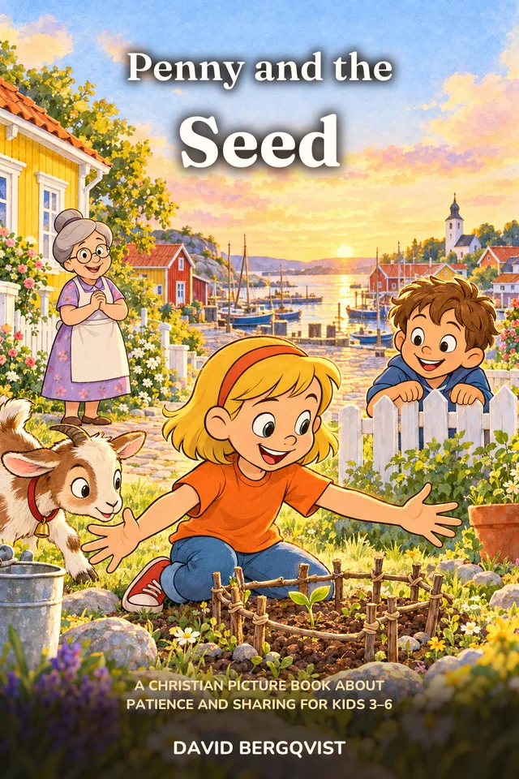

Before the Golden Notebook, there was a seed. Little Penny's first picture book, about patience, sharing and the miracle of growing things.

Five-year-old Penny is about to throw an apple seed as far as she can, when Grandma Rose stops her and holds it up to the sun like a diamond. "How many apples live in this seed?"
So Penny plants it. And waits. And waits. The boy next door laughs at her tiny tree, a goat named Betty eats it, and one spring night the frost comes. Penny learns what every gardener knows: the best things grow slowly, and they grow best when you share them.
A picture book of 16 spreads with warm, full-color illustrations, made to be read aloud again and again.
Good things take time. Penny waters, waits and protects her tree long before it gives anything back.
The first apple is shared on the steps, and soon the whole neighborhood is carrying baskets.
A single seed holds a whole tree. Like the mustard seed in Jesus' parable, told for the youngest.
18 printable pages for kids 6 to 10, to start the conversation at your kitchen table this week.
Ages 3 to 6, as a read-aloud. Older siblings who know Penny from the chapter books will enjoy meeting her at five.
The picture books come after the first chapter books. Join the free pack list and we'll tell you the day it's out.
The pack is made for kids 6 to 10, but many of the coloring pages work for younger kids too.